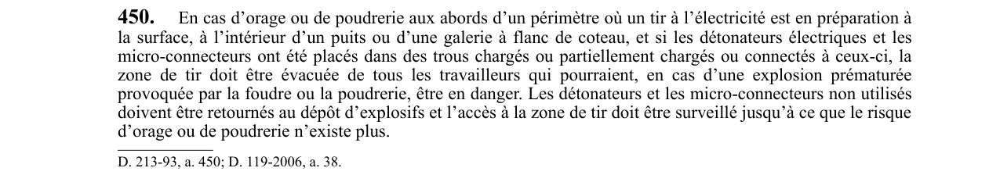

art-450-RSSM : orage ou poudrerie et tir électrique
- Vise un tir à l’électricité en préparation à la surface, dans un puits ou dans une galerie à flanc de coteau, en cas d’orage ou de poudrerie.
- Condition d’application : détonateurs électriques et micro-connecteurs déjà placés dans des trous chargés ou partiellement chargés, ou connectés à ceux-ci.
- Évacuer de la zone de tir tous les travailleurs qui seraient en danger en cas d’explosion prématurée provoquée par la foudre ou la poudrerie.
- Retourner au dépôt d’explosifs les détonateurs et micro-connecteurs non utilisés.
- Surveiller l’accès à la zone de tir jusqu’à ce que le risque d’orage ou de poudrerie n’existe plus.
🌐 LegisQuébec · 📄 PDF officiel
Texte officiel
En cas d’orage ou de poudrerie aux abords d’un périmètre où un tir à l’électricité est en préparation à la surface, à l’intérieur d’un puits ou d’une galerie à flanc de coteau, et si les détonateurs électriques et les micro-connecteurs ont été placés dans des trous chargés ou partiellement chargés ou connectés à ceux-ci, la zone de tir doit être évacuée de tous les travailleurs qui pourraient, en cas d’une explosion prématurée provoquée par la foudre ou la poudrerie, être en danger. Les détonateurs et les micro-connecteurs non utilisés doivent être retournés au dépôt d’explosifs et l’accès à la zone de tir doit être surveillé jusqu’à ce que le risque d’orage ou de poudrerie n’existe plus.
Texte de l’article 450 RSSM, extrait de la couche texte du PDF officiel (page 117), sans OCR ni retouche. La capture ci-dessous et le PDF font foi.
{kind=link}

Toucher l'image pour l'agrandir🔗 Voir art. 450 RSSM dans le PDF (page 117)
Version : texte officiel du RSSM (RLRQ c. S-2.1, r. 14), à jour au 1er mai 2024 : Éditeur officiel du Québec
Voir aussi
- art. 449 : véhicule motorisé conduit stationné immobilisé · interdiction : un véhicule motorisé ne doit pas être conduit, stationné ou immobilisé au-dessus de trous de mine chargés à moins que: 1° les fils…
- art. 451 : cartouche-amorce préparée moment amorçage trou · obligation : une cartouche-amorce ne doit être préparée qu’au moment de l’amorçage d’un trou de mine.
- ⚖️ Loi habilitante : LSST
- ↑ Index du bloc : Travaux à ciel ouvert et explosifs
Pages qui pointent ici (3)
- art-449-RSSM : véhicule au-dessus de trous chargés Recueil législatif
- art-451-RSSM : préparation de la cartouche-amorce au moment de l’amorçage Recueil législatif
- RSSM : Travaux à ciel ouvert et explosifs (art. 401 à 475) Recueil législatif